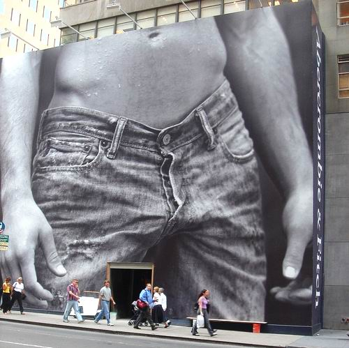

去年接触到Abercrombie & Fitch这个品牌，外贸店里淘过几件Abercrombie & Fitch衣服，质地很不错，体恤的款式侉侉的，看上去没什么型，但穿在身上休闲味十足，不过要小心仿制品，买过一件外套，估计是打样的，一只袖子紧另一只袖子松，穿着的效果还不错。Abercrombie & Fitch的色彩很正，整体风格简洁，很符合我的审美。
去年接触到Abercrombie & Fitch这个品牌，外贸店里淘过几件Abercrombie & Fitch衣服，质地很不错，体恤的款式侉侉的，看上去没什么型，但穿在身上休闲味十足，不过要小心仿制品，买过一件外套，估计是打样的，一只袖子紧另一只袖子松，穿着的效果还不错。Abercrombie & Fitch的色彩很正，整体风格简洁，很符合我的审美。
全美国共有366家Abercrombie & Fitch分店，是美国知名品牌，由同名公司经营，主要走休闲年轻路线，衣服质感超佳。AF衣服突出胸，腰，臀，完全贴身，性感不凡，颓废不羁。此品牌最有名的地方，就是在广告尽显肌肉男造型，且基本上都是身材好、年轻的白人。据说Abercrombie & Fitch在韩国卖价较高，比较流行。从BING那里得知此品牌是让俊男美女都变成乞丐打扮，但有种族歧视倾向, 常因应聘员工长得达不到其标准不予录用引起法律纠纷, 不过纽约的店里现已可见亚裔面孔的销售代表呢。据传黎明曾买过这个牌子的衣服送脱星。
2002年4月18日Abercrombie & Fitch曾宣布撤回当时新出品的以亚洲人为主题的T恤衫，回应当地亚裔团体抗议种族歧视。这件体恤售价25美元，上面印着张漫画：一个斜眼、戴着圆锥形帽子的亚洲人，旁边印着口号，“黄氏兄弟洗衣店：两个黄能变成白”（WONG BROTHERS LAUNDRY SERVICE: TWO WONGS CAN MAKE IT WHITE）和“碗与球—中国饭与保龄球”（WOK-N-BOWL-CHINESE FOOD AND BOWLING）。
“我们决不想冒犯任何人”， Abercrombie & Fitch公司发言人卡尼（Hampton Carney）说：“设计T恤衫上的图案时，本意很单纯，只是想给我们的产品增加点幽默和变化，既然有顾客觉得不舒服，我们就从商店撤回来。”
卡尼声称，制造商以为这些T恤衫可能会吸引亚裔顾客，没想到招致如此的愤怒，实感意外：“本来以为大家都会喜欢，特别是亚裔社区。我们觉得T恤衫大胆、不敬、可笑，每个人都会喜欢。事实却大相径庭。”
Abercrombie公司在全国有500家商店，卡尼不能确定能从店里撤回多少T恤衫，同时一些T恤衫还没有送到店里。Abercrombie & Fitch总部在俄亥俄州的新阿尔伯尼（New Albany）。
Abercrombie & Fitch在曼哈顿搞的超大超酷牛仔裤广告，让人们玩钻裤档方能入内
